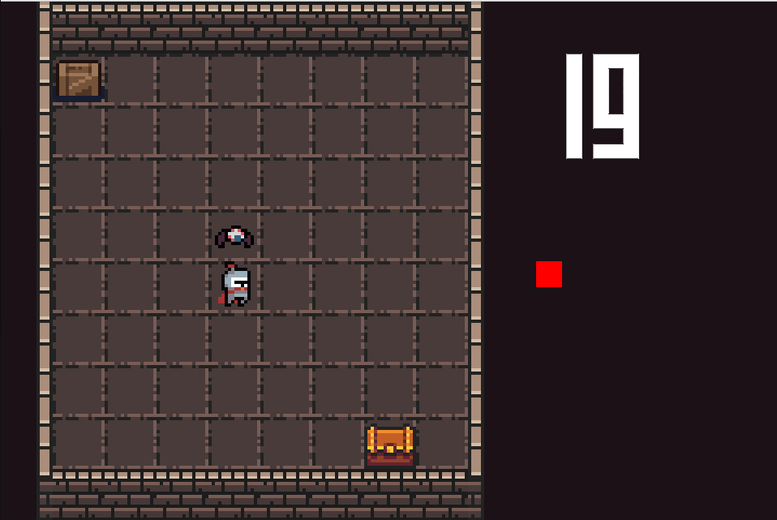
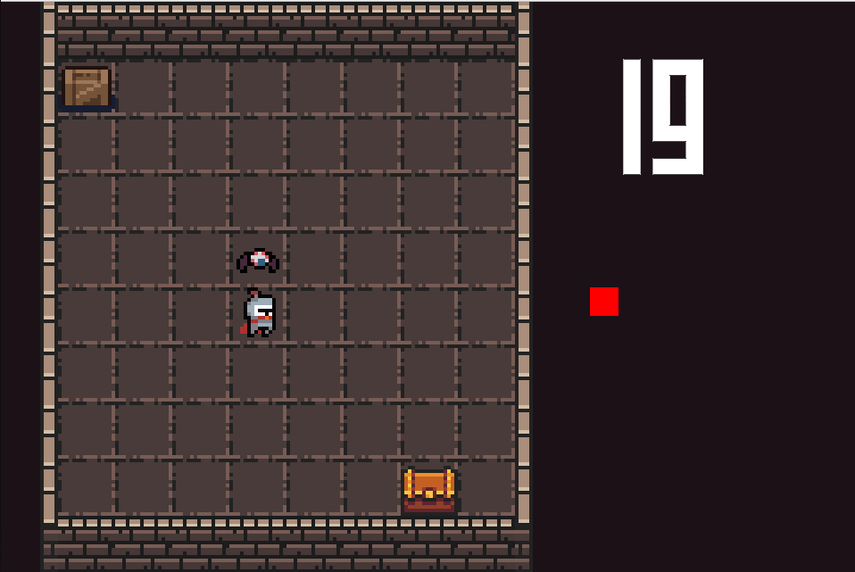
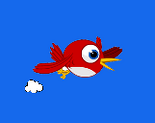
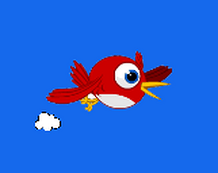
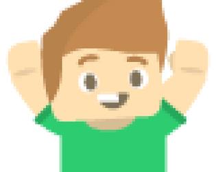
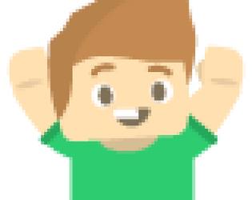

Je m'appelle Anthony Verdon, j'ai 20 ans et j'étudie à 42 Angoulême depuis septembre
2022.
A côté de mes études, je réalise des projets personnels en lien avec l'industrie du jeu
vidéo car j'aimerais travailler dans ce secteur en tant que développeur.
Actuellement en stage
chez Eversim jusqu'en octobre 2025, en tant que développeur sur le jeu Geo-Political
Simulator, je recherche un autre poste pour au minimum novembre 2025 (alternance, CDD, CDI). Si
mon profil vous intéresse, n'hésitez pas à me contacter !

Poste: stagiaire sur le jeu Geo-Political Simulator
Date: Mai à Octobre 2025
Missions:- Interactions et affichages sur la carte ou l’interface du jeu
- Mise en scène de visuels 3d et 2d sur la carte du jeu,
- Mise en place et déclenchements des dialogues et réaction des personnages IA

Poste: stagiaire sur le jeu Pro Cycling Manager
Date: Avril à Septembre 2024
Missions:- Intégration UI
- suivi et débug lors des période de beta et de sortie du jeu
- maintien et amélioration des outils de production
 



 



 
